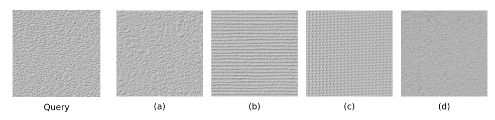
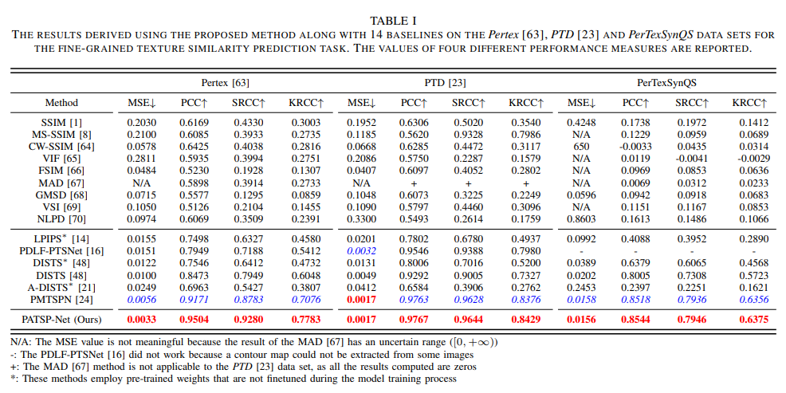
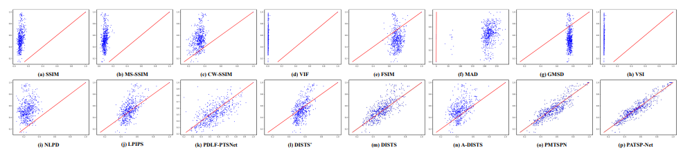

Perception-Aware Texture Similarity Prediction
|  |
A query texture and four retrieval textures contained in the Pertex [2] data set. The SSIM value computed between each retrieval texture and the query texture is 0.0264. However, the corresponding similarity values contained in the Isomap perceptual similarity matrix [18] manifest great variations, which are 0.85286, 0.37449, 0.36677 and 0.544 in turn.


|
test
|  |
The results derived using the proposed method along with 14 baselines on the Pertex, PTD and PerTexSynQS data sets for the fine-grained texture similarity prediction task. The values of four different performance measures are reported.
|  |
The scatter plots drawn using the similarity data predicted using 14 baselines and the proposed method against the human perceptual similarity data, when the Pertex [63] data set is used.